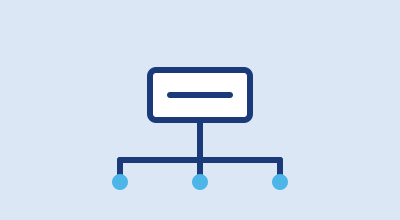
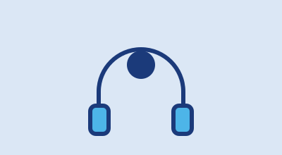
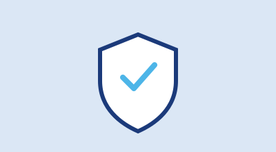

Seção de apresentação
Soluções para manter sua rede conectada
Somos uma central especializada em conectividade, segurança e suporte técnico. Abra chamados, acompanhe solicitações e mantenha sua infraestrutura de rede sempre funcionando.
Conectividade, segurança e suporte técnico
Seção de apresentação
Somos uma central especializada em conectividade, segurança e suporte técnico. Abra chamados, acompanhe solicitações e mantenha sua infraestrutura de rede sempre funcionando.

Instalação e ajuste de roteadores, switches e pontos de acesso.
Solicitar atendimento
Atendimento para computadores, impressoras e sistemas internos.
Solicitar atendimento
Proteção contra ameaças, firewall e atualização de antivírus.
Solicitar atendimentoAcompanhamento contínuo do desempenho e da disponibilidade da rede.
Solicitar atendimento